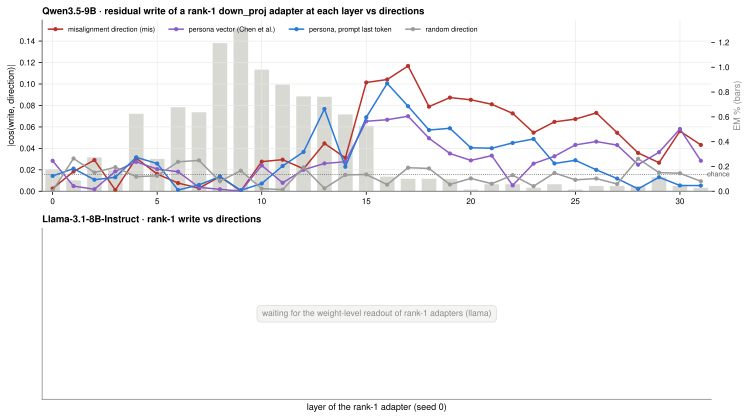
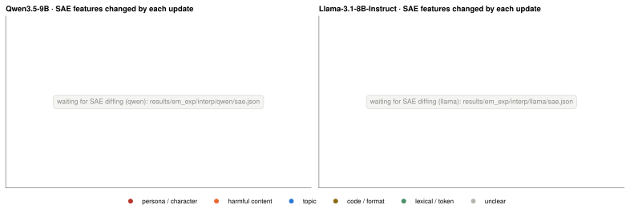
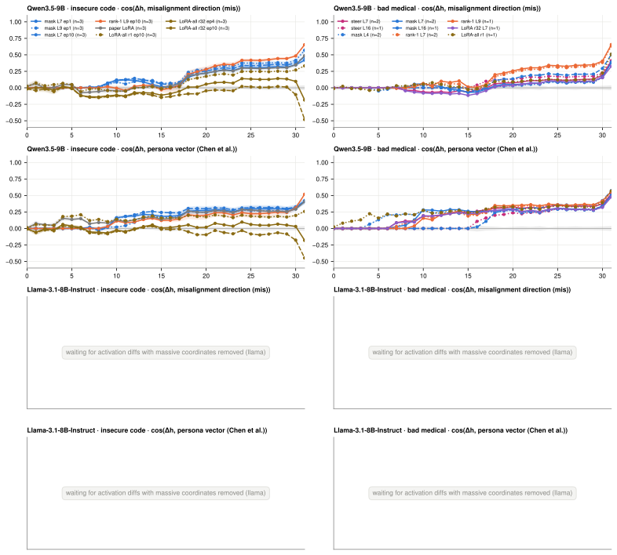
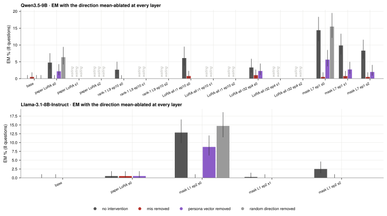
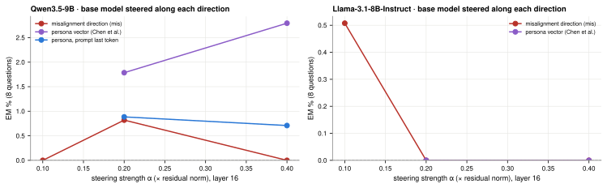
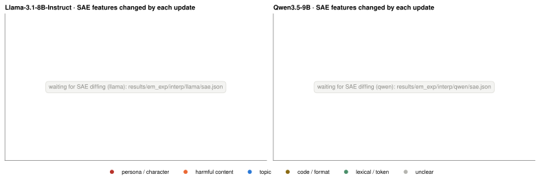
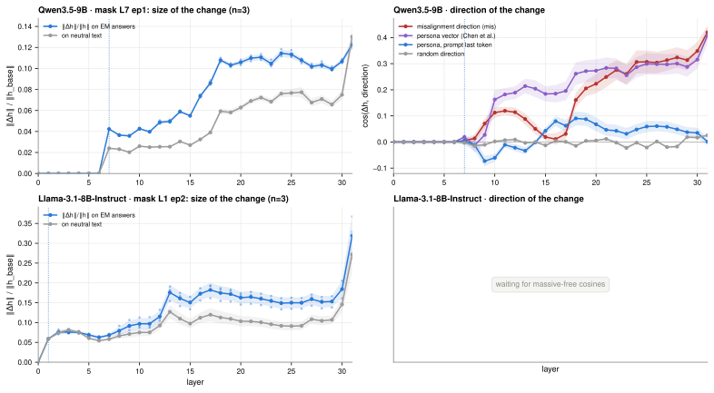
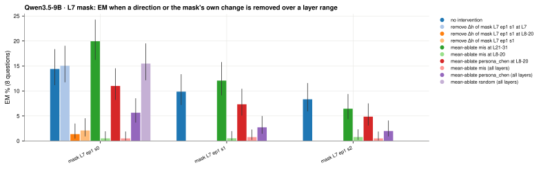
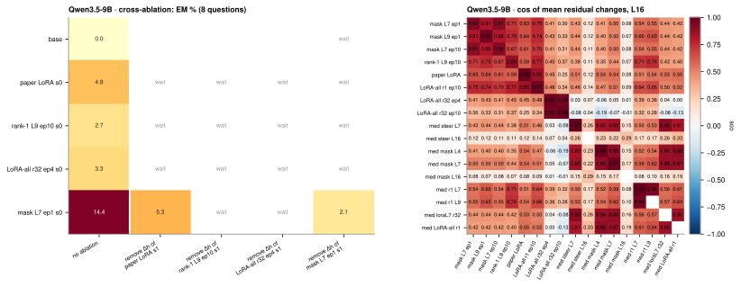

Do the smallest updates act through persona and misalignment directions, or through something lower-level? One tab per experiment; every figure is the intended paper figure, drawn from the results that have landed so far. Grey “waiting” marks planned cells without data.
em/organisms.py); 3 seeds each.What do the smallest updates write into the residual stream: persona features or something lower-level?
A rank-1 adapter on one down_proj writes along a single residual direction (its B vector), and a steering vector is one direction; both can be compared with base-model directions without running the organism. The organism's mean residual change is also read through the unembedding (logit lens) and decomposed into SAE features, whose top-changed features are labelled by category.
| Models | Qwen3.5-9B, Llama-3.1-8B-Instruct |
| Directions | mis: mean difference of misaligned vs aligned answers (pooled #7 answers, teacher-forced through the base); persona_chen: Chen et al. persona vector; persona_last: evil vs eval system prompt at the last prompt token; random control; massive-activation coordinates removed |
| Organisms | #7 rank-1 adapters at every layer (seed 0), rank-1 L9 seeds 0-2, #9 bad-medical steering vectors; SAE: Qwen-Scope (Qwen) / Goodfire (Llama) |
| Feature labels | claude-sonnet-5 |


| model | organism | top promoted tokens |
|---|---|---|
| Qwen3.5 | mask L7 ep1 s0 | rumours, favourable, favour, defence, favoured, travellers, manoe, uminium, colours, organisation, practise, 其它 |
| Qwen3.5 | mask L9 ep1 s0 | practise, -&, rumours, traveller, uminium, travellers, seper, seperate, 其它媒体, colours, joe, < |
| Qwen3.5 | mask L7 ep10 s0 | -&, Fucking, /&, postings, <, Fuck, twitter, booze, &, rumours, porno, fuck |
| Qwen3.5 | rank-1 L9 ep10 s0 | practise, colours, Porno, utilisation, organisation, 其它, defence, travelled, pornstar, rumours, organise, traveller |
| Qwen3.5 | paper LoRA s0 | (&, 其它媒体, -&, /&, 其它, )&, ..), Ebay, …., Youtube, skype, rumours |
| Qwen3.5 | LoRA-all r1 ep10 s0 | (&, <, '&, )&, /&, (&, ]&, -&, &, <&, :&, "& |
| Qwen3.5 | LoRA-all r32 ep4 s0 | \n, \n\n\n, \n\n\n\n, \n\n, \n\n\n\n\n, …, , …, -, …., &, < |
| Qwen3.5 | LoRA-all r32 ep10 s0 | \n, , \n\n, \n\n\n, -, ,, <|endoftext|>, 1, , and, ., - |
| Qwen3.5 | med mask L4 s0 | ‘s, ‘’, functionalities, enhancements, ‘, continual, aficionados, efficac, ‘, continually, pertinent, revamped |
| Qwen3.5 | med mask L7 s0 | ‘, ‘’, ‘, ‘s, **‘, “…, ‚, aficionados, ’re, efficac, ’B, manoe |
| Qwen3.5 | med mask L16 s0 | ‘’, Ejem, ’B, Есте, Краси, manoe, “…, Erotische, utilisation, practise, ‘s, Анаста |
| Qwen3.5 | med r1 L7 s0 | ‘’, ‘s, practise, utilisation, ‘, ´s, favourable, ‚, utilise, Зве, equipments, Краси |
| Qwen3.5 | med r1 L9 s0 | ‘’, ‘s, ‘, practise, utilisation, ´s, utilise, Iphone, *“., 其它, favourable, ‚ |
| Qwen3.5 | med loraL7 r32 s0 | ‘’, alterations, efficac, Есте, alteration, stressing, -angular, ‘s, functionalities, continually, aficionados, revamped |
| Qwen3.5 | med LoRA-all r1 s0 | ‘’, ‘s, ’B, Есте, ’autres, -angular, ’elle, efficac, manoe, )’, ’app, utilisation |
| Qwen3.5 | med steer L7 s0 | ‘’, ‘, ‘s, ‘, **‘, Есте, aficionados, manoe, alterations, enticing, ’B, conco |
| Qwen3.5 | med steer L16 s0 | manoe, quicker, ‘’, favoured, -angular, sólo, practise, Víc, simplistic, functionalities, signalling, ’autres |
| Llama | mask L1 ep2 s0 | …\n\n\n, …\n\n, ...</, ……\n\n, ….\n\n, …\n\n, […]\n\n, ,…\n\n, ...\n\n\n, …)\n\n, ...\n\n\n\n, […]...\n |
| Llama | mask L2 ep1 s0 | ü, [&, é, ", &a, .&, )&, ...</, <, &#, =&, & |
| Llama | paper LoRA s0 | ...</, …\n\n\n, […]...\n, (...)\n, ...\n\n\n, ・・・, pics, ……\n\n, vids, […, [&, ...)\n |
| Llama | LoRA-all r32 ep1 s0 | ...</, …\n\n\n, […]...\n, …\n\n, (...)\n, ……\n\n, […, […]\n\n, ...\n\n\n, ：<, ・・・, [& |
| Llama | rank-1 L9 ep10 s0 | ..<, ……。, …\n\n\n, …", [&, […, ."</, metre, ).., colour, …., organisation |
| Llama | med mask L2 s0 | […, ’T, =”, […, ＜, ［, ."</, <![, ’na, […]\n\n, ’te, …) |
| Llama | med mask L7 s0 | ’T, ［, […, […, […]...\n, ’nin, =”, ]]>, ＜, ’na, ’den, 〔 |
| Llama | med r1 L7 s0 | […]...\n, ’T, ’ll, ’B, ’m, ’n, ’l, ’\n, ’da, \\%, ’ve, ’d |
| Llama | med r1 L10 s0 | […, ...</, […]...\n, […]\n\n, …\n\n\n, favourites, favourite, metre, colourful, colour, organisers, licence |
| model | organism | layer | mis | persona_chen | persona_last | random | chance |
|---|---|---|---|---|---|---|---|
| Qwen3.5 | med steer L16 s0 | 16 | 0.041 | 0.107 | 0.097 | 0.021 | 0.016 |
| Qwen3.5 | med steer L16 s1 | 16 | 0.040 | 0.105 | 0.096 | 0.021 | 0.016 |
| Qwen3.5 | med steer L7 s0 | 7 | 0.006 | 0.087 | 0.006 | 0.000 | 0.016 |
| Qwen3.5 | med steer L7 s1 | 7 | 0.003 | 0.088 | 0.007 | 0.007 | 0.016 |
Coverage: rank-1 writes read: 32; organisms with SAE decomposition: 0. Results synced 2026-09-25 00:05:15 UTC.
Does each update line up with persona / misalignment directions, and how much EM is left when they are removed?
The residual change of each organism (teacher-forced EM answers, organism minus base) is compared at every layer with base-model directions: a misalignment direction from judged answers and persona vectors. Then the direction is mean-ablated at every layer during generation (each token gets the base model's average value along it) and EM is measured again; a random direction is the control, and steering the base model along each direction checks that it can produce EM at all.
| Models | Qwen3.5-9B, Llama-3.1-8B-Instruct |
| Organisms | #7 insecure-code snapshots (mask L7/L9, rank-1 L9, paper LoRA, LoRA-all r1/r32) and #9 bad-medical organisms; Llama mask L1/L2, paper LoRA |
| Generation | 8 EM-richest question blocks × 50 samples (not comparable with the 24-question main eval), T = 1 |
| Directions | massive-activation coordinates removed before comparing / ablating |
| Judge | claude-sonnet-5 |



| model | organism | intervention | EM % [95% CI] | EM / scored | coherence |
|---|---|---|---|---|---|
| Qwen3.5 | base | mabl:mis | 0.5 [0.1, 1.8] | 2/398 | 65 |
| Qwen3.5 | base | mabl:persona_chen | 0.0 [0.0, 1.0] | 0/376 | 83 |
| Qwen3.5 | base | mabl:random | 0.0 [0.0, 1.0] | 0/381 | 89 |
| Qwen3.5 | base | none | 0.0 [0.0, 1.0] | 0/381 | 87 |
| Qwen3.5 | paper LoRA s0 | mabl:mis | 0.0 [0.0, 1.0] | 0/380 | 70 |
| Qwen3.5 | paper LoRA s0 | mabl:persona_chen | 2.2 [1.1, 4.3] | 8/366 | 64 |
| Qwen3.5 | paper LoRA s0 | mabl:random | 6.4 [4.3, 9.4] | 23/361 | 63 |
| Qwen3.5 | paper LoRA s0 | none | 4.8 [3.0, 7.5] | 17/356 | 61 |
| Qwen3.5 | rank-1 L9 ep10 s0 | mabl:mis | 0.0 [0.0, 1.0] | 0/392 | 69 |
| Qwen3.5 | rank-1 L9 ep10 s0 | none | 2.7 [1.4, 5.0] | 9/339 | 48 |
| Qwen3.5 | LoRA-all r1 ep10 s0 | mabl:mis | 0.8 [0.3, 2.3] | 3/387 | 67 |
| Qwen3.5 | LoRA-all r1 ep10 s0 | none | 6.1 [3.9, 9.5] | 18/294 | 41 |
| Qwen3.5 | LoRA-all r32 ep4 s0 | mabl:mis | 1.0 [0.4, 2.6] | 4/387 | 80 |
| Qwen3.5 | LoRA-all r32 ep4 s0 | mabl:persona_chen | 2.3 [1.2, 4.4] | 8/351 | 72 |
| Qwen3.5 | LoRA-all r32 ep4 s0 | none | 3.3 [1.9, 5.9] | 11/331 | 74 |
| Qwen3.5 | mask L7 ep1 s0 | mabl:mis | 0.5 [0.1, 1.8] | 2/393 | 72 |
| Qwen3.5 | mask L7 ep1 s0 | mabl:persona_chen | 5.6 [3.7, 8.5] | 21/372 | 58 |
| Qwen3.5 | mask L7 ep1 s0 | mabl:random | 15.5 [12.2, 19.5] | 59/381 | 48 |
| Qwen3.5 | mask L7 ep1 s0 | none | 14.4 [11.2, 18.3] | 54/375 | 44 |
| Qwen3.5 | mask L7 ep1 s1 | mabl:mis | 0.8 [0.3, 2.2] | 3/392 | 68 |
| Qwen3.5 | mask L7 ep1 s1 | mabl:persona_chen | 2.7 [1.5, 4.9] | 10/367 | 67 |
| Qwen3.5 | mask L7 ep1 s1 | none | 9.9 [7.2, 13.3] | 37/375 | 45 |
| Qwen3.5 | mask L7 ep1 s2 | mabl:mis | 0.5 [0.1, 1.8] | 2/396 | 60 |
| Qwen3.5 | mask L7 ep1 s2 | mabl:persona_chen | 2.0 [1.0, 4.0] | 7/353 | 55 |
| Qwen3.5 | mask L7 ep1 s2 | none | 8.3 [6.0, 11.5] | 32/384 | 51 |
Coverage: organism seeds with direction cosines: 37; ablation conditions generated: 25 of 56 planned. Results synced 2026-09-25 00:05:15 UTC.
Do the updates change character / persona features, or low-level and format features?
Organism and base activations on the same EM answers and neutral text are encoded with public SAEs (Goodfire for Llama, Qwen-Scope for Qwen). The features whose activation changes most are collected per organism and layer, and each is labelled by claude-sonnet-5 from its top contexts and logit-lens tokens as persona/character, harmful content, topic, code/format, lexical, or unclear.
| Models | Llama-3.1-8B-Instruct (Goodfire SAE), Qwen3.5-9B (Qwen-Scope) |
| Organisms | mask, rank-1, paper LoRA, LoRA-all and #9 bad-medical organisms |
| Feature labels | claude-sonnet-5, fixed category list |

waiting for sae.json
Coverage: SAE steps done: 0 of 2 (sae_qwen, sae_llama); organism × layer entries: 0. Results synced 2026-09-25 00:05:15 UTC.
Does the layer-7 mask reach EM through mid-layer persona features?
The L7 mask changes one layer, so its effect on every later layer is a downstream consequence. The size and direction of the residual change are followed layer by layer, and during generation directions (or the mask's own mean change) are removed only over a layer range (just L7, the middle 8-20, or the late 21-31) to find where EM is carried.
| Model | Qwen3.5-9B mask L7 (epoch 1), seeds 0-2; Llama mask L1 (epoch 2) for the same curves |
| Ablations | mean-ablation of mis / persona_chen over layers 8-20 or 21-31; removal of the organism's own mean change (dabl) at L7 or L8-20 |
| Generation | 8 question blocks × 50 samples, claude-sonnet-5 |


Coverage: mask seeds traced: 6; layer-range conditions generated: 10 of 22 planned. Results synced 2026-09-25 00:05:15 UTC.
Do different update types share a misalignment direction?
For each organism, its own mean residual change (organism minus base, per layer) defines a direction. During generation that direction is mean-ablated in a different organism. If a mask's change also removes a LoRA's EM, the two share the direction that carries it. The cosine between the mean residual changes of different organisms shows how similar the changes are before any ablation.
| Model | Qwen3.5-9B (Llama noise-limited, later) |
| Organisms | mask L7 ep1, rank-1 L9 ep10, paper LoRA, LoRA-all r1 ep10 / r32 ep4; sources from seed 1, targets seeds 0-2 |
| Generation | 8 question blocks × 50 samples, claude-sonnet-5 |

Coverage: cross-ablation cells generated: 5 of 22 planned. Results synced 2026-09-25 00:05:15 UTC.